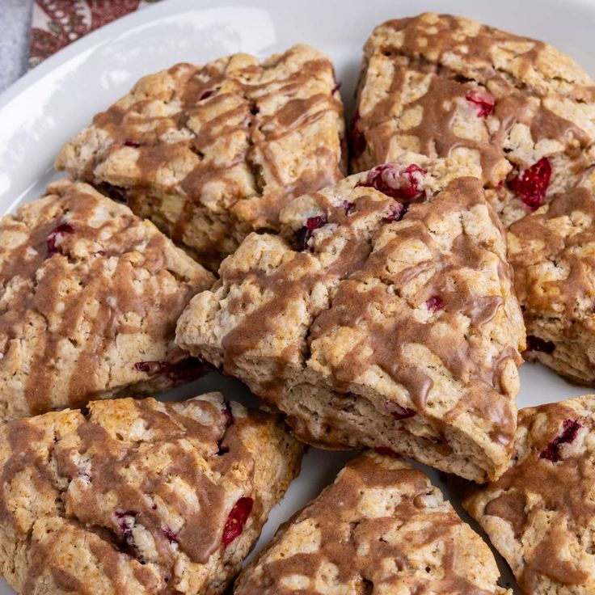

CINNAMON APPLE SCONES

INGREDIENTS
2 cups (250g) all-purpose flour (spooned & leveled), plus more for hands and work surface
2 and 1/2 teaspoons baking powder
1 and 1/4 teaspoons ground cinnamon
½ teaspoon salt
1/2 cup (8 Tbsp; 113g) unsalted butter, frozen
1/2 cup (120ml) heavy cream, plus 2 Tbsp for brushing
1 large egg, cold
1/2 cup (100g) packed light or dark brown sugar
1 teaspoon pure vanilla extract
1 heaping cup (125g) peeled and chopped apple
INSTRUCTIONS
-
Whisk flour, baking powder, cinnamon, and salt together in a large bowl. Grate the frozen butter using a box grater. Add it to the flour mixture and combine with a pastry cutter, two forks, or your fingers until the mixture comes together in pea-sized crumbs. Place in the refrigerator or freezer as you mix the wet ingredients together.
-
Whisk 1/2 cup heavy cream, the egg, brown sugar, and vanilla extract together in a small bowl. Drizzle over the flour mixture, add the apples, then mix together until everything appears moistened.
-
Lightly dust a work surface with flour. Pour the dough mixture on top and, with floured hands, work dough into a ball as best you can. Dough will be sticky. If it’s too sticky, add a little more flour. If it seems too dry, add 1 more Tablespoon of heavy cream. Press into an 8-inch disc and, with a sharp knife or bench scraper, cut into 8 wedges.
-
Brush scones with remaining heavy cream and if desired for extra crunch, sprinkle with coarse sugar. (You can do this before or after refrigerating in the next step.)
-
lace scones on a plate or lined baking sheet (if your refrigerator has space!) and refrigerate the shaped scones for at least 15 minutes and up to 1 day.
-
Meanwhile, preheat the oven to 400°F (204°C).
-
Line a large baking sheet with parchment paper or silicone baking mat. After refrigerating, arrange scones 2–3 inches apart on the prepared baking sheet(s).
-
Bake for 22–25 minutes or until golden brown around the edges and lightly browned on top. Remove from the oven and cool for a few minutes before topping with optional caramel sauce.
-
Leftover scones keep well at room temperature for up to 2 days or in the refrigerator for up to 5 days.